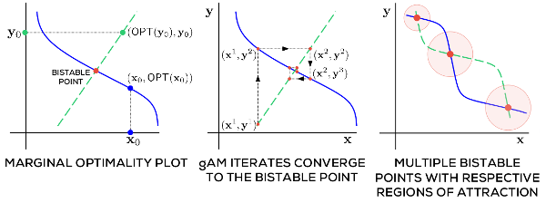

Nonconvex Optimization for Machine Learning (Chapter 4)
Prateek Jain & Purushottam Kar, Non-convex Optimization for Machine Learning
- previous chapter: Nonconvex Projected Gradient Descent
- current chapter: Alternating Minimization
- next chapter: The EM Algorithm
Summary
Definition 1. A continuously differentiable function in two variables \(f: \mathbb{R}^p \times \mathbb{R}^q \to \mathbb{R}\) is jointly convex if for every \((\mathbf{x}^1, \mathbf{y}^1)\) and \((\mathbf{x}^2,\mathbf{y}^2)\), we have: \[f(\mathbf{x}^2, \mathbf{y}^2) \geq f(\mathbf{x}^1,\mathbf{y}^1) + \left\langle \nabla f(\mathbf{x}^1, \mathbf{y}^1), (\mathbf{x}^2,\mathbf{y}^2 ) - (\mathbf{x}^1,\mathbf{y}^1) \right\rangle,\] where \(\nabla f(\mathbf{x}^1,\mathbf{y}^1)\) is the gradient at \((\mathbf{x}^1,\mathbf{y}^1)\).
Definition 2. A continuously differentiable function of two variables \(f: \mathbb{R}^p \times \mathbb{R}^q \to \mathbb{R}\) is marginally convex in its first variable if for every \(\mathbf{y} \in \mathbb{R}^q\), the function \(f(\cdot, \mathbf{y}) :\mathbb{R}^p \to \mathbb{R}\) is convex. That is, for every \(\mathbf{x}^1, \mathbf{x}^2 \in \mathbb{R}^p\), we have: \[f(\mathbf{x}^2, \mathbf{y}) \geq f(\mathbf{x}^1, \mathbf{y}) + \left\langle \nabla_\mathbf{x} f(\mathbf{x}^1, \mathbf{y}), \mathbf{x}^2 - \mathbf{x}^1\right\rangle,\] where \(\nabla_\mathbf{x}f(\mathbf{x}^1, \mathbf{y})\) is the partial gradient of \(f\). Marginal convexity in the second variable is the obvious analogous condition.
Example 3. The function \(f(x,y)\) is marginally linear, so marginally convex. But it is not jointly convex.
Definition 4. A continuously differentiable function \(f: \mathbb{R}^p \times \mathbb{R}^q \to \mathbb{R}\) is (uniformly) \(\alpha\)-marginally strongly convex (MSC) and (uniformly) \(\beta\)-marginally strongly smooth (MSS) in its first variable if for every value of \(\mathbf{y} \in \mathbb{R}^q\), the function \(f(\cdot, \mathbf{y}) : \mathbb{R}^p \to \mathbb{R}\) is \(\alpha\)-strongly convex and \(\beta\)-strongly smooth.
Note: “uniform” refers to the independence of the parameters \(\alpha\) and \(\beta\) with respect to \(\mathbf{y}\).
Alternating minimization is a technique to solve an optimization problem on two variables by iteratively solving the marginal optimization problem in each variable:
| Algorithm 1 | gAM (Generalized Alternating Minimization) | |
|---|---|---|
|
Objective function \(f: \mathcal{X} \times \mathcal{Y} \to \mathbb{R}\) | |
|
A point \((\hat{\mathbf{x}}, \hat{\mathbf{y}}) \in \mathcal{X} \times \mathcal{Y}\) with near optimal objective value | |
|
\((\mathbf{x}^1,\mathbf{y}^1) \leftarrow \mathsf{INITIALIZE}()\) | |
|
for \(t = 1, 2, \dotsc, T\) do | |
|
\(\quad \mathbf{x}^{t+1} \leftarrow \mathrm{arg\ min}_{\mathbf{x} \in \mathcal{X}} f(\mathbf{x},\mathbf{y}^t)\) | |
|
\(\quad \mathbf{y}^{t+1} \leftarrow \mathrm{arg\ min}_{\mathbf{y} \in \mathcal{Y}} f(\mathbf{x}^{t+1},\mathbf{y})\) | |
|
end for | |
|
return \((\mathbf{x}^{T},\mathbf{y}^T)\) |
We can also perform “descent” versions of gAM, where at each iteration, the complete marginal optimization is not performed; instead, a gradient step is taken.
A similar technique to gAM called coordinate minimization (CM) (and respectively coordinate descent (CD), for the descent version) is used when the objective function is convex: this procedure treats a \(p\)-dimensional vector as \(p\) one-dimensional variables and runs gAM on each othe coordinates.
Definition 5. Let \(f\) be a function of two variables constrained to be in the set \(\mathcal{X}\) and \(\mathcal{Y}\), respectively. For any point \(\mathbf{y} \in \mathcal{Y}\), we say that \(\tilde{\mathbf{x}}\) is a marginally optimal coordinate with respect to \(\mathbf{y}\), and use the shorthand \(\tilde{\mathbf{x}} \in \mathsf{mOPT}_f(\mathbf{y})\) if \(f(\tilde{\mathbf{x}}, \mathbf{y}) \leq f(\mathbf{x},\mathbf{y})\) for all \(\mathbf{x} \in \mathcal{X}\).
Definition 6. Let \(f\) as before. Then, a point \((\mathbf{x},\mathbf{y})\) is considered a bistable point if both \(\mathbf{x}\) and \(\mathbf{y}\) are marginally optimum with respect to each other.

Left: the marginally optimal coordinate curves for \(\mathbf{x}\) (solid blue line) and \(\mathbf{y}\) (dashed green line). Their intersection is a bistable curve. Center: the trajectory of each iteration of the gAM algorithm. Right: An example of an objective function with more than one bistable point. Source: Jain Kar 2017Two interesting questions are:
- how fast does gAM converge to a bistable point?
- are there (global) optimality guarantees to the bistable point gAM converges to?
Convergence Guarantee
When the objective is jointly convex, we have a nice convergence result:
Theorem 7. Let \(f: \mathbb{R}^p \times \mathbb{R}^q \to \mathbb{R}\) be jointly convex, continuously differentiable, satisfy \(\beta\)-MSS in both its variables and \(f^* = \min_{\mathbf{x},\mathbf{y}} > -\infty\). Suppose the region of \(\mathbb{R}^p\times \mathbb{R}^q\) such that \(f(\mathbf{x}, \mathbf{y}) \leq f(\mathbf{0},\mathbf{0})\) is bounded. Initialize gAM at \((\mathbf{x}^1,\mathbf{y}^1)\) at \((\mathbf{0},\mathbf{0})\). Then, at most \(T = O\left(\frac{1}{\epsilon}\right)\) steps, \(f(\mathbf{x}^T, \mathbf{y}^T) \leq f^* + \epsilon\).
Proof. TO BE FILLED IN.
Now, we consider nonconvex objective functions.
Lemma 8. A point \((\mathbf{x},\mathbf{y})\) is bistable with respect to a continuously differentiable function \(f: \mathbb{R}^p \times \mathbb{R}^q \to \mathbb{R}\) that is marginally convex in both variables iff \(\nabla f(\mathbf{x},\mathbf{y}) = \mathbf{0}\).
Proof. TO BE FILLED IN.
Definition 9. A function \(f: \mathbb{R}^p \times \mathbb{R}^q \to \mathbb{R}\) satisfies the \(C\)-robust bistability property if for some \(C > 0\), for every \((\mathbf{x}, \mathbf{y}) \in \mathbb{R}^p \times \mathbb{R}^q\), \(\tilde{\mathbf{y}} \in \mathsf{mOPT}_f(\mathbf{x})\) and \(\tilde{\mathbf{x}} \in \mathsf{mOPT}_f(\mathbf{y})\), we have: \[\begin{align*} f(\mathbf{x},\mathbf{y}^*) + f(\mathbf{x}^*, \mathbf{y}) - 2f^* \leq C \cdot (2f(\mathbf{x},\mathbf{y}) - f(\mathbf{x}, \tilde{\mathbf{y}}) - f(\tilde{\mathbf{x}}, \mathbf{y})). \end{align*}\]
Fill in later: See pg. 41 for what intuition for what this means…
Theorem 10. Let \(f:\mathbb{R}^p \times \mathbb{R}^q \to \mathbb{R}\) be a continuously differentiable (but possibly nonconvex) function that, within the region \(S_0 = \{(\mathbf{x},\mathbf{y}) : f(\mathbf{x},\mathbf{y}) \leq f(\mathbf{0},\mathbf{0})\}\) satisfies \(\alpha\)-MSC, \(\beta\)-MSS in both variables, and \(C\)-robust bistability. Initialize gAM at \((\mathbf{x}^1,\mathbf{y}^1) = (\mathbf{0},\mathbf{0})\). Then, after at most \(T = O\left(\log \frac{1}{\epsilon}\right)\) steps, we have \(f(\mathbf{x}^T, \mathbf{y}^T) \leq f^* + \epsilon\).
Before proving this theorem, the following property of robust bistability will help us prove a later convergence theorem. This lemma relates localconvergence to global convergence. This is a similar technique to the local error bound used in (Luo Tseng 1993).
Lemma 11. Let \(f\) as before. Then, for any \((\mathbf{x},\mathbf{y})\), \(\tilde{\mathbf{y}} \in \mathsf{mOPT}_f(\mathbf{x})\) and \(\tilde{\mathbf{x}} \in \mathsf{mOPT}_f(\mathbf{y})\), \[\begin{align*} ||\mathbf{x} - \mathbf{x}^*||_2^2 + ||\mathbf{y} - \mathbf{y}^*||_2^2 \leq \frac{C \beta}{\alpha} \left(||\mathbf{x} - \tilde{\mathbf{x}}||_2^2 + ||\mathbf{y} - \tilde{\mathbf{y}}||_2^2\right). \end{align*}\]
Exercises
Problem 1. [Exercise 4.3] Marginal strong convexity does not imply convexity. Show this by giving an example of a function \(f: \mathbb{R}^p \times \mathbb{R}^q \to \mathbb{R}\) that is marginally strongly convex in both variables, but is nonconvex. Hint: \(f(x) = x^2\) is 2-strongly convex.
Problem 2. [Exercise 4.5] Show that \((\mathbf{x}^*, \mathbf{y}^*) \in \mathrm{arg\ min}_{\mathbf{x} \in \mathcal{X}, \mathbf{y} \in \mathcal{Y}} f(\mathbf{x}, \mathbf{y})\) must be a bistable point for any function even if \(f\) is nonconvex.
Problem 3. [Exercise 4.7] For a robustly bistable function, any almost bistable point is almost optimal as well. Show this by proving: for any \((\mathbf{x},\mathbf{y}), \tilde{\mathbf{y}} \in \mathsf{mOPT}_f(\mathbf{x})\), \(\tilde{\mathbf{x}} \in \mathsf{mOPT}_f(\mathbf{y})\) such that \(\max \{f(\mathbf{x},\tilde{\mathbf{y}}), f(\tilde{\mathbf{x}}, \mathbf{y}) \} \leq f(\mathbf{x},\mathbf{y}) + \epsilon\), that \(f(\mathbf{x},\mathbf{y}) \leq f^* + O(\epsilon)\). Conclude that if \(f\) satiisfies robust bistability, then any bistable point is optimal.
Problem 4. [Exercise 4.8] Show that marginal strong conexity is additive. That is, if \(f, g: \mathbb{R}^p \times \mathbb{R}^q \to \mathbb{R}\) such that \(f\) is \(\alpha_1\) and \(\alpha_2\)-MSC in its two variables, and \(g\) is \(\beta_1\) and \(\beta_2\)-MSC in its variables, then \(f+g\) is \((\alpha_1 + \beta_1)\) and \((\alpha_2 + \beta_2)\)-MSC in its variables.
Problem 5. [Exercise 4.9] The alternating minimization procedure may oscillate if the optimization problem is not well-behaved. Suppose for an especially nasty problem, the gAM procedure enters the following loop: \[\begin{align*} (\mathbf{x}^t, \mathbf{y}^t) \to (\mathbf{x}^{t+1}, \mathbf{y}^t) \to (\mathbf{x}^{t+1}, \mathbf{y}^{t+1}) \to (\mathbf{x}^{t}, \mathbf{y}^{t+1}) \to (\mathbf{x}^{t}, \mathbf{y}^t) \end{align*}\] Show that all four points in the loop are bistable and share the same function value. Can you draw a hypothetical set of marginally optimal coordinate curves which may cause this to happen?
Discussion
Further Reading
A variant of CM/CD splits variables into blocks of multidimensional variables. The choice of blocks can cause speed ups in convergence. For example, the Gauss-Southwell rule chooses coordinates/blocks according to the largest objective gradient. These methods are important to support vector machines, due to speed. See also:
- [Luo Tseng 1992] On the convergence of the coordinate descent method for convex differentiable minimization
- [Luo Tseng 1993] Error bounds and convergence analysis of feasible descent methods: a general approach
- [Shalev-Shwartz Zhang 2013] Stochastic dual coordinate ascent methods for regularized loss minimization.